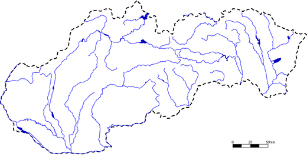
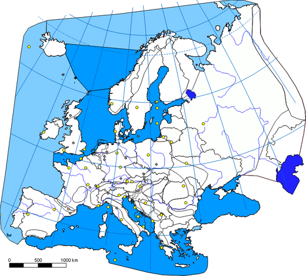
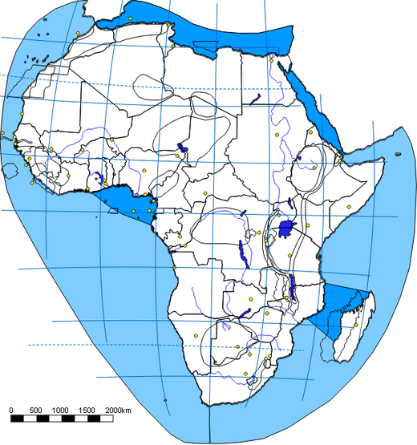
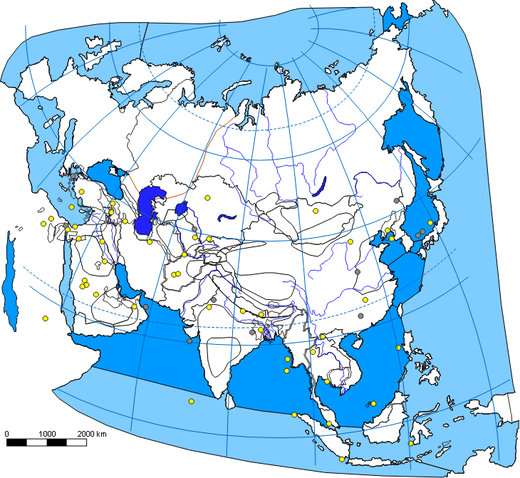
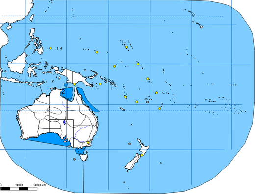
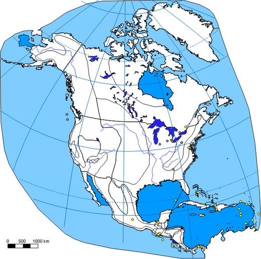
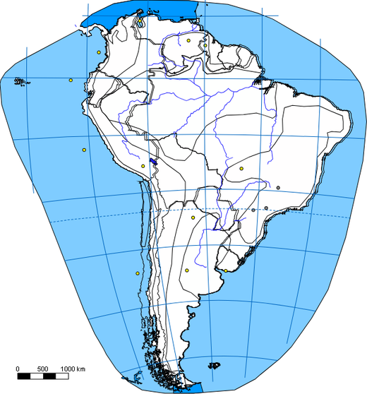

Poznávanie
Vyskúšaj sa!
Na mape sa objaví 3, 5 alebo 7 značiek. Vyber tú, ktorá patrí zadanému objektu.
3 / 5 / 7 možností
8 máp · 3 hry · 1 editor
Kartografický ateliér · pôvodná hra z roku 2010
Osem pôvodných máp, tri hry a editor. Vyber si aktivitu nižšie alebo začni odporúčaným tréningom — bez registrácie.

Hry a nástroje
Každá hra používa rovnaké pôvodné mapy a testy. Editor a atlas sú doplnky, ktoré môžeš použiť kedykoľvek.
Na mape sa objaví 3, 5 alebo 7 značiek. Vyber tú, ktorá patrí zadanému objektu.
Klikni na mapu tam, kde si myslíš, že objekt leží. Čím bližšie, tým viac bodov.
Pretiahni objekt z prostriedku mapy na jeho skutočné miesto. Rozhoduje presnosť.
Vrstvy, farby, vlastné značky, kreslenie, ukladanie .mef, export PNG/JPEG a tlač. Všetko na ôsmich mapách.
Všetkých 74 miest v prehľadnom atlase s hľadaním, filtrami a rýchlym tréningom.
Mapy
Klikni na mapu a otvorí sa Vyskúšaj sa! s výberom testu. Každá mapa má vlastné objekty, testy a obtiažnosti.







Na telefóne potiahni do strany pre ďalšie mapy.
Postup
Štatistiky doplnkového tréningu 74 slovenských miest. Plné aktivity vyššie si vedú vlastné výsledky.
Skóre sa ukladá len v tomto prehliadači.
Atlas pôvodných 74 miest · zobrazených 74 miest

Farba bodu zodpovedá úrovni mesta (testLevel). Filtrácia hore je kumulatívna ako v pôvodnej hre — „Ťažká“ zobrazí všetkých 74 miest.
Žiadne mesto nevyhovuje filtru.
Načítavam mapu…
Slovensko.mef
Načítavam editor…
Kompletná reimplementácia pôvodnej aplikácie z roku 2010.
Nekomerčná edukatívna reimplementácia. Pôvodné ochranné známky a autorské práva patria ich vlastníkom.